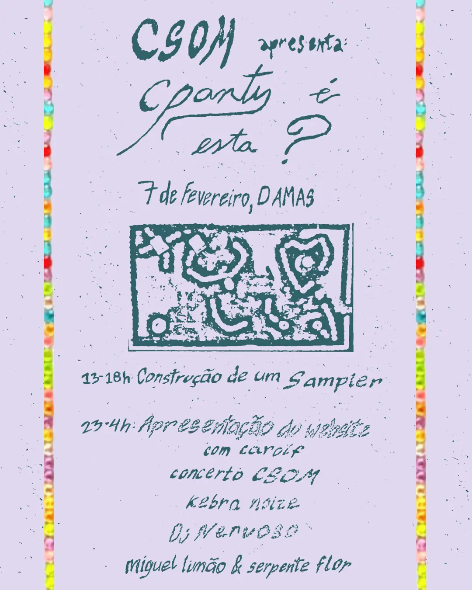

CSOM apresenta: CParty é esta? ✴︎ 7 de Fevereiro ✴︎ 23h ✴︎ Damas

Começamos o ano com um evento muito especial nas Damas: o lançamento do nosso novo site e uma festa benefit para darmos continuidade ao projecto e a novas ideias sónicas.
À noite, a partir das 23h, será o lançamento do site, com uma breve conversa connosco e com a carolf, que o fez com muito amor.
Depois temos um concerto do CSOM com participantes de todas as oficinas *´¨`*•.¸¸.• e a estreia oficial do duo kebra noize
A pista de dança vai estar fogosa com DJ Nervoso e um b2b com a team do CSOM aka Miguel Limão & Serpente Flor, até às 4h.
CSOM – CParty Aparece! 👀